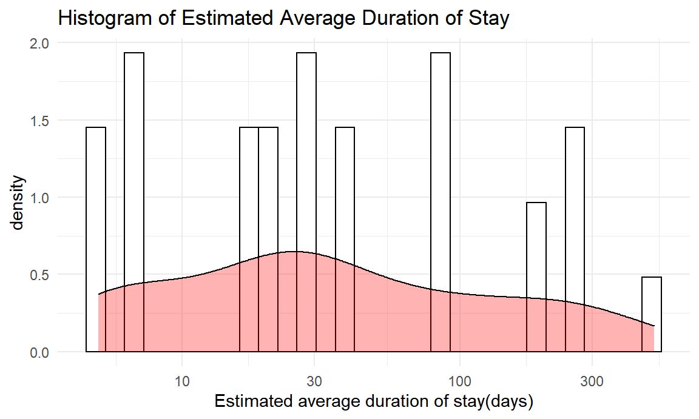

Regression Analysis
The main dataset for our project is made by World Health Organization. It can be access at here. The dataset which consists types of usage funding has a range from 2017-2019, and other datset that consists estimated mortality of TB cases has a range of 2000 to 2019. To make the data consistent, we will use the data from 2017 to 2019.
Variables that we are going to use are:
rcvd_patsup: Funding received for patient support (US Dollars)
rcvd_staff: Funding received for National TB Programme staff (central unit staff and subnational TB staff) (US Dollars)
rcvd_mdrmgt:Funding received for programme costs to treat drug-resistant TB (US Dollars)
rcvd_fld:Funding received for drugs to treat drug-susceptible TB (US Dollars)
rcvd_oth:Funding received for all other budget line items (US Dollars)
e_mort_num: Estimated number of deaths from TB (all forms)
e_pop_num: Estimated total population number
To be more accurate, we will make a new variable called e_mort_pro_100k, a proportion of estimated proportion of death from TB by dividing the estimated number of deaths from TB(e_mort_num) by estimated total population number(e_pop_num) and multiply by 100,000.
There are other types of usage funding, but we selected top 5 by taking the mean of each types and ordered them.
## Joining, by = "country"
## Joining, by = "country"
Transformation and Assumption of the Normality
Below is the density graph of proportion of the estimated mortality of TB per 100k. Since the graph is right-skewed, we need to make some changes to make this to satisfy the assumptions of the linear model.

We used log transformation to make the graph normal. Below is the graph after the transformation, and we can say that it is more bell-shaped than the previous graph. 
Results
With the regression analysis, we can predict the Estimated average duration of stay if patients starting MDR-TB/XDR-TB treatment are hospitalized. We will use the top 5 usage of funding and year. We have included the interaction between rcvd_patsup and rcvd_staff because there could be a possible relationship that the funding for patient support can have different duration of stay to different national TB Programme staff who received funding.
Based on transformation above, the model we are going to fit is: \[log(average\ duration\ of\ stay\ for\ treatment) = \beta_0 + \beta_1 year + \beta_2 patient + \beta_3 staff + \beta_4 programme + \beta_5 drugs + \beta_6 other + \beta_7 patient*staff\]
summary(lm_model)##
## Call:
## lm(formula = hospd_mdr_dur ~ year + rcvd_patsup + rcvd_staff +
## rcvd_mdrmgt + rcvd_fld + rcvd_oth + rcvd_patsup * rcvd_staff,
## data = TB_regression)
##
## Residuals:
## Min 1Q Median 3Q Max
## -131.18 -68.66 -7.71 21.51 369.00
##
## Coefficients:
## Estimate Std. Error t value Pr(>|t|)
## (Intercept) 3.676e+04 3.139e+03 11.712 < 2e-16 ***
## year -1.816e+01 1.555e+00 -11.676 < 2e-16 ***
## rcvd_patsup -1.544e-05 1.034e-06 -14.933 < 2e-16 ***
## rcvd_staff -9.157e-07 2.543e-07 -3.600 0.00032 ***
## rcvd_mdrmgt 5.270e-06 3.414e-07 15.439 < 2e-16 ***
## rcvd_fld -4.101e-06 3.279e-07 -12.508 < 2e-16 ***
## rcvd_oth -1.313e-06 1.890e-07 -6.947 4.06e-12 ***
## rcvd_patsup:rcvd_staff 1.836e-13 1.160e-14 15.820 < 2e-16 ***
## ---
## Signif. codes: 0 '***' 0.001 '**' 0.01 '*' 0.05 '.' 0.1 ' ' 1
##
## Residual standard error: 99.85 on 7054 degrees of freedom
## Multiple R-squared: 0.1751, Adjusted R-squared: 0.1743
## F-statistic: 214 on 7 and 7054 DF, p-value: < 2.2e-16Based on the summary, we can see that some of our main effects and the interaction term are statistically significant.
The F-statistics is 2221.3144029. It’s obvious that the model is statistically significant under any reasonable critical value. It also has a R2 value of 0.5108901, which indicated chosen variables together are able to explain 51.09% of observed variation.